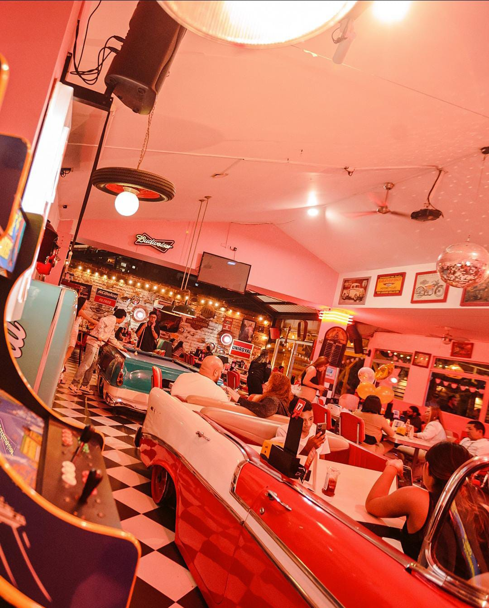
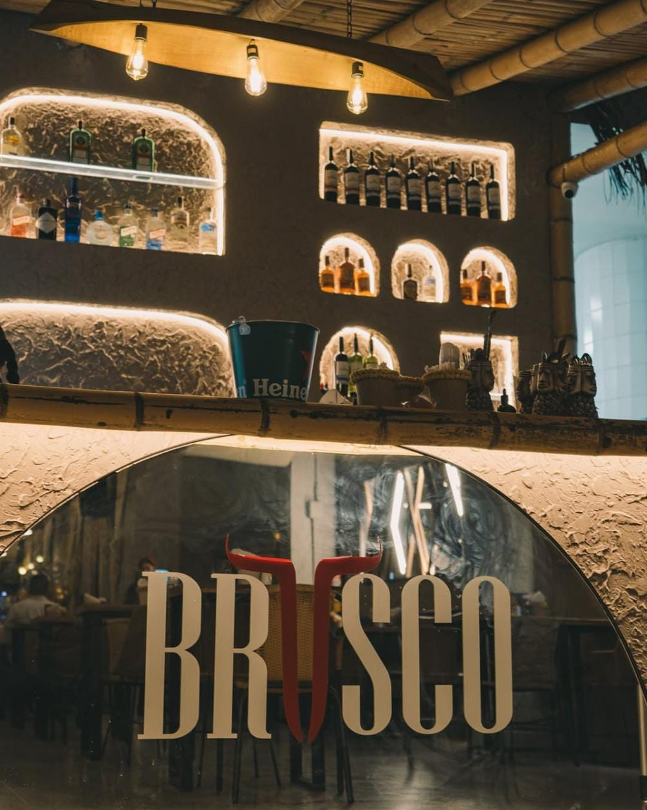
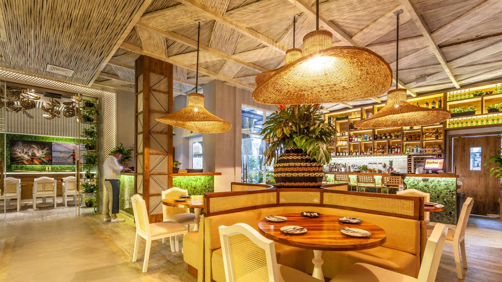
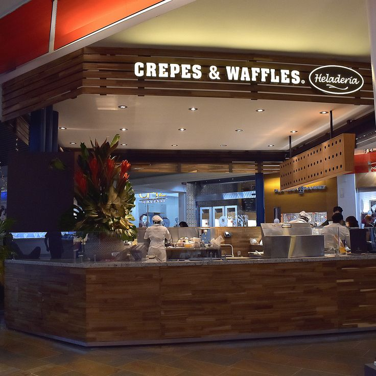

Toppings Burgers 64
📍 Prado, Barranquilla - Colombia

Classic Dinner
📍 Medellin, Envigado - Colombia

Brusco
📍 Medellin, Envigado - Colombia

Palo de Mango
📍 Villa Country, Barranquilla - Colombia

Crepes & Waffles
📍 Centros Comerciales, Barranquilla - Colombia